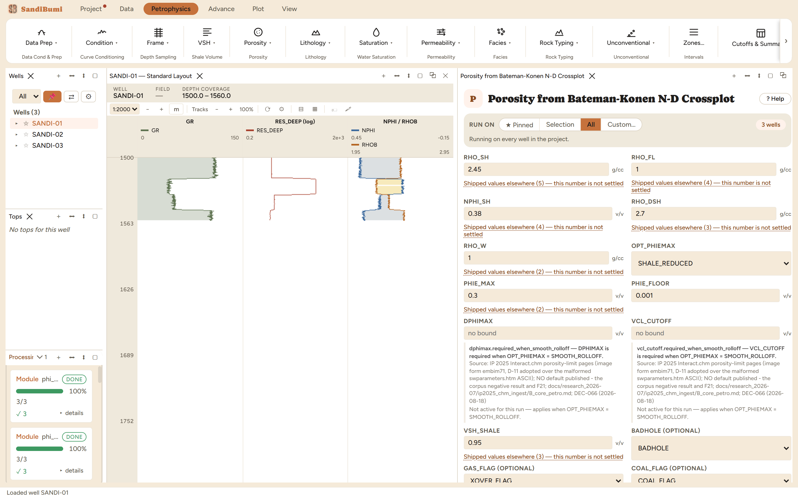

The analytic neutron-density crossplot: the published closed-form solution of the two-log system as a two-pseudo-mineral problem, computed sample by sample rather than looked up in a transcribed chart. This is the reporting-grade crossplot porosity, the deterministic method the quick-look chapter defers to, and it returns something the quick-look cannot: the apparent matrix density RHOMAA_BK as an output, which makes the method self-auditing.
The published solution picks a pseudo-mineral pair by which side of the density-porosity line the sample falls on, then intersects the point with the matrix-fluid line (the equations above carry the published forms). Two conventions are load-bearing:
3 clean. Run live: median PHIE_DNBK 0.1762, and median RHOMAA_BK 2.6892 g/cc: a hair above quartz, which is what a slightly shaly quartz sand should return, and the first thing to check on any run. Against the quick-look average the analytic answer reads +0.0124 (median, sample-paired): the two methods genuinely differ, about 1.2 porosity units here, and the analytic one is the method with a published derivation behind it:
SELECT round(median(a.value - b.value), 4) FROM computed_curves a JOIN computed_curves b ON a.well_id = b.well_id AND a.depth = b.depth AND b.curve_name = 'PHIE_DN' WHERE a.curve_name = 'PHIE_DNBK' AND NOT isnan(a.value) AND NOT isnan(b.value)
The shale-point dial, measured: NPHI_SH moved to 0.30 lifts the median to 0.1852 and pushes RHOMAA_BK up to 2.7132: the hydroxyl the shale point no longer accounts for is pushed into apparent matrix, and the divergence from the quick-look doubles to +0.023. RHOMAA drifting off the field's known lithology is the tell that the shale point is wrong; restored to 0.38, every number returns exactly.
